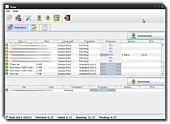

Freenet
Dieser Artikel wurde für die folgenden Ubuntu-Versionen getestet:
Ubuntu 14.04 Trusty Tahr
Zum Verständnis dieses Artikels sind folgende Seiten hilfreich:
"Ich sorge mich die ganze Zeit um mein Kind und das Internet, obwohl sie zu jung ist, um sich schon eingewählt zu haben. Worüber ich mir Sorgen mache? Ich mache mir Sorgen, dass sie in 10 oder 15 Jahren zu mir kommen wird und sagt: Papa, wo warst du, als sie dem Internet die Pressefreiheit nahmen?" -- Mike Godwin, Electronic Frontier Foundation
Mit diesem Zitat wurde man früher auf der Startseite des Projekts Freenet  begrüßt. Es verdeutlicht zugleich den Gedanken und die Zielsetzung hinter den Anstrengungen: Freenet ist ein dezentrales Netzwerk im Internet, das Benutzern anonymisierten Informations- und Datenaustausch ermöglicht. Es bietet unter anderem Funktionen, um
begrüßt. Es verdeutlicht zugleich den Gedanken und die Zielsetzung hinter den Anstrengungen: Freenet ist ein dezentrales Netzwerk im Internet, das Benutzern anonymisierten Informations- und Datenaustausch ermöglicht. Es bietet unter anderem Funktionen, um
Webseiten und Inhalte anonym und zugleich zensurresistent zu veröffentlichen
sich mit anderen Teilnehmern auszutauschen (z.B. durch FMS)
Anonymes File-Sharing zu betreiben (mit Thaw, über Freesites oder FreemulET)
Anonyme E-Mail-Kommunikation zu nutzen (möglich durch Freemail)
Anonym zu chatten (mithilfe von FLIP)
Anonyme und verteilte Dateisysteme zu erstellen (FNFS)
Für seine Bemühungen wurde das Projekt Anfang 2015 mit dem jährlichen SUMA-Award ausgezeichnet (Quelle  ).
).
Überblick¶
Das Freenet kann praktisch als anonymes Internet im „echten Internet“ bezeichnet werden. Gespeichert werden die Daten des Netzwerks redundant auf den Computern der Teilnehmer. Der Benutzer legt fest, wie viel Platz er auf der eigenen Festplatte und wie viel Bandbreite der Internetverbindung dem Freenet zur Verfügung gestellt wird. Der Computer eines Teilnehmers fungiert also zugleich als Server und als Client; man spricht deshalb von einem Knoten (engl. „Node“). Der Benutzer profitiert davon, größere Kapazitäten zur Verfügung zu stellen, denn dadurch findet sich der eigene Knoten besser im Netzwerk zurecht, was sich durch eine höhere Surfgeschwindigkeit äußert. Das Programm überträgt die verschlüsselten Daten automatisch und relativ willkürlich auf den eigenen Rechner, ohne dabei das eigene Surfverhalten oder Suchanfragen zu berücksichtigen. Der Benutzer ist dadurch in den meisten Ländern durch die Glaubhafte Abstreitbarkeit geschützt, wobei hoher Aufwand nötig ist, um Benutzer und Daten überhaupt identifizieren zu können.
Das Programm selber läuft als Daemon (Systemdienst) im Hintergrund und fungiert als lokaler Proxy. Der Zugriff auf das Freenet erfolgt über einen Internetbrowser der eigenen Wahl, wobei Firefox besonders zu empfehlen ist. Die lokale Adresse des Proxys (normalerweise http://localhost:8888/) wird aufgerufen, und der Browser daraufhin ins Freenet umgeleitet.
Mittlerweile bietet Freenet zwei Verbindungsmethoden:
Opennet: Dies ist die klassische Variante. Um sich mit dem Netzwerk zu verbinden, sucht der eigene Knoten beim Start automatisch nach anderen, über die er eintreten kann. Leider liegt direkt hier das größte Problem, denn gerade dieses offensichtliche Abfragen fremder Knoten eröffnet zahlreiche Angriffspunkte (siehe dazu Opennet Attacks
). Obendrein funktioniert diese Methode in Ländern wie z.B. China ohnehin nicht, da die Verwendung des Opennet leicht zu erkennen ist und unterbunden wird.
Darknet: Man verbindet sich manuell über Knoten, deren Betreiber man kennt und denen man vertraut. Hierbei greift das Kleine-Welt-Phänomen, es sollten jedoch mindestens fünf Knoten sein. Diese Methode ist beträchtlich sicherer als das Opennet, nützt aber natürlich herzlich wenig, wenn man keine anderen Freenet-Benutzer kennt.
Bei den beiden Methoden handelt es sich also nicht um zwei verschiedene Netzwerke, sondern es sind lediglich verschiedene Verbindungswege.
Voraussetzung¶
Neben einer möglichst schnellen Internet-Verbindung (DSL ist hierfür am besten geeignet) benötigt Freenet ein installiertes Java. Zur Installation von OpenJDK siehe Java/Installation.
Installation¶
Da Freenet (u.a. aufgrund der stetigen Entwicklung und häufigen Aktualisierungen) nicht in den Paketquellen verfügbar ist, bieten die Freenet-Entwickler auf der Seite des Projekts ein Installationsprogramm an.
Mit einem Klick auf Freenet installieren  öffnet sich im Web-Browser ein Dialogfeld mit der Möglichkeit, den Link mit Java Web Start auszuführen. Nachdem man dies bestätigt hat, erscheint der Installationsassistent.
öffnet sich im Web-Browser ein Dialogfeld mit der Möglichkeit, den Link mit Java Web Start auszuführen. Nachdem man dies bestätigt hat, erscheint der Installationsassistent.
Hinweis!
Fremdsoftware kann das System gefährden.
Im ersten Schritt erfolgt die Auswahl der Sprache, wobei man "deu" wählt und auf "OK"' klickt. Im nächsten Schritt lässt sich ein frei wählbarer Installationspfad auswählen. Die Standard-Einstellung kann hierbei so belassen werden. Gleiches gilt für die Auswahl der Installationspakete im nächsten Schritt. Nach zwei weiteren Klicks auf "Weiter" und der abschließenden Meldung, dass die Installation erfolgreich abgeschlossen wurde, ist die Installation beendet.
Alternative Installation¶
Mit den folgenden Befehlen im Terminal [1] lädt man sich die aktuelle Version von Freenet herunter und installiert diese:
wget http://downloads.freenetproject.org/alpha/installer/new_installer.jar java -jar new_installer.jar
Um Freenet nun zu starten, genügen diese Befehle:
cd ~/Freenet ./run.sh start
Sobald Freenet erfolgreich gestartet wurde, öffnet sich der Web-Browser, in dem man die Einstellungen vornehmen kann.
Konfiguration¶
Nach der Installation sollte sich automatisch ein Firefox-Fenster (für Freenet wurde dazu automatisiert ein eigenes Firefox-Profil erstellt) mit einem Konfigurations-Assistenten öffnen. Geschieht dies nicht, kann man den Assistenten auch manuell über die Adresse http://127.0.0.1:8888/wizard/ aufrufen.
Hinweis:
Um den Grad der Anonymität erheblich zu erhöhen, sollte man im Laufe der Zeit auf der Freundes-Seite gegenseitig mit Freunden die Referenz austauschen und dort einfügen. Hat man mindestens 5 Freunde, so kann der "unsichere Modus" abgeschaltet werden. Doch auch im "unsicheren Modus" erhöht sich die Anonymität mit der Anzahl der verbundenen Freunde.
Die anzugebenden Informationen zur Verbindungs-Geschwindigkeit und verfügbaren Arbeitsspeicher werden im Assistenten ausreichend erklärt und daher hier nicht näher beschrieben. Hat man die Konfiguration beendet, so kann man abschließend noch auf der Konfigurationsseite unter http://127.0.0.1:8888/config/ die Sprache auf Deutsch umstellen (falls dies noch nicht automatisch geschehen ist) und andere grundlegende Einstellungen vornehmen.
FMS¶
FMS steht für "Freenet Message System" und bietet anonyme Diskussionsforen. Um trotz Zensurresistenz Attacken zu erschweren, beinhaltet FMS das Prinzip des Netz des Vertrauens. Man gibt also an, inwieweit man persönlich einem Kommunikationspartner in der Hinsicht vertraut, dass dieser keinen Spam versendet. Dies ist ein geringer (nicht zwingender) Mehraufwand für die Nutzer, stärkt dabei aber das System in seiner Integrität.
FMS befindet sich noch in einer frühen Entwicklungsphase und wird aktiv weiterentwickelt. Zu beachten ist außerdem, dass es einige Minuten bis zu Stunden dauern kann, bis ein Beitrag in einem Board erscheint. Für Funktions-Tests ist daher das Board "test" gedacht.
Experten-Info:
FMS ist eine Neuentwicklung von Frost, einem Messageboard, das mit DoS-Attacken zu kämpfen hatte und bis heute geflooded wird. Daher kann FMS (und ab dem kommenden Freenet 0.8 mit dem Plugin "Freetalk") als Nachfolger von Frost angesehen werden.
Installation¶
Nachdem FMS als "Linux i386 Binary" von der Projektseite (zu finden auf der Unterseite "Prototype") geladen wurde (auf der Freenet-Startseite befindet sich immer ein aktueller Link zur FMS Freesite), muss das Paket nur noch entpackt werden [6] und die Datei fms mit einem Klick oder über das Terminal[5] ausgeführt[3] werden.
Hinweis:
Es empfiehlt sich, für FMS einen Menü-Eintrag zu erstellen oder direkt in den Autostart einzutragen. Ein Beenden von FMS ist über das Webinterface auf http://127.0.0.1:8080 möglich.
Erst-Einrichtung¶
Die Verwaltung von FMS geschieht über den Browser. Die Adresse dazu lautet http://localhost:8080.
Hier muss zunächst über "Create Identity" eine Identität angelegt werden. Durch das einmalige Lösen von sog. Captchas im Menüpunkt "Announce Identity" wird das Erstellen von Nachrichten in FMS ermöglicht. Es kann jedoch 1-2 Tage dauern, bis die Identität dem Netzwerk bekannt ist. Auf der Seite "Local Identities" kann überprüft werden, ob die Identität bereits freigeschaltet ist. Ein lesender Zugriff auf das Nachrichten-System ist jedoch auch ohne bestätigte Identität möglich.
Experten-Info:
Der Mechanismus der Captchas dient einzig dazu, den Nutzer als Mensch zu identifizieren und dadurch sicherzustellen, dass kein Roboter zahlreiche Identitäten erstellt.
Client-Einrichtung¶
Anstatt FMS über die mitgebrachte Oberfläche unter http://127.0.0.1:8080 zu verwenden, lässt sich auch jeder normale Usenet-Client verwenden: Exemplarisch am Mail- und News-Client Thunderbird soll die Einrichtung von FMS gezeigt werden.
Nachdem man im Menü "Bearbeiten" auf den Menüpunkt "Konten" geklickt hat, trägt man die Daten wie folgt ein:
"Newsgruppen-Konto"
Ihr Name: Frei wählbares Pseudonym
E-Mail-Adresse: Frei wählbar (z.B. eine Freemail-Adresse)
Newsgruppen-Server:
localhostKontenbezeichnung: Frei wählbar (z.B. FMS)
"Bearbeiten -> Konten -> FMS (Server-Einstellungen)"
Port:
1119Haken weglassen bei "Verschlüsselte Verbindung verwenden"
Haken bei "Beim Starten auf neue Nachrichten prüfen"
Haken bei "Alle 10 minuten auf neue Nachrichten prüfen"
Haken entfernen bei "Abfrage vor Download von mehr als 500 Nachrichten"
Mit "OK" bestätigen
Auf der linken Seite auf "FMS" klicken und dann "Newsgruppen abonnieren". Speziell zur Einrichtung mit Thunderbird existiert im Freenet auch ein Konfigurations-Video.
Freemail¶
Freemail bietet anonyme E-Mail-Kommunikation innerhalb des Freenet-Netzwerks. Es lässt sich so kein Rückschluss auf die reale Identität des Absenders oder Empfängers schließen.Zur Einrichtung klickt man sich über die Freenet-Startseite auf "Plugins -> Offizielles Plugin laden", wählt dort "Freemail" aus und klickt auf "Laden". Nach ein paar Sekunden erscheint in der Liste der Plugins nun "plugins.FreemailPlugin". Dort klickt man auf "Besuchen".
Erstellung eines E-Mail-Kontos¶
Das Formular benötigt für die Erstellung eines Mail-Zugangs drei Eingaben:
| Erstellung eines Freemail-Accounts | |||
| Freemail-Seite | Bedeutung | Beispieleintrag | |
| Name | Benutzername | hans-peter | |
| Password | Passwort | Gbua%&rm!d95 | |
| Domain | frei wählbare Domain | freiheit | |
Die daraus resultierende Freemail-Adresse lautete nach dem Schema "Name@Domain.freemail" in diesem Beispiel hans-peter@freiheit.freemail.
Hinweis:
Für die erste Kommunikation mit einer anderen Person sollte auf beiden Seiten die lange Freemail-Adresse benutzt werden, die in der automatisch zugesandten E-Mail nach der Einrichtung beschrieben ist.
Einrichtung des Mailprogramms¶
Freemail funktioniert mit jedem Mail-Client, der IMAP und SMTP unterstützt. Die Einstellungen lauten:
Für eingehende Mails:
Protokoll: "IMAP"
Server:
localhostPort:
3143
Für ausgehende Mails
Protokoll: "SMTP"
Server:
localhostPort:
3025
Detaillierte Informationen zur Funktionsweise und Einrichtung von Freemail gibt es auf der Freenet-Projektseite .
Thaw¶

Thaw ist ein plattformunabhängiger Up- und Download-Manager für Freenet. Er lässt sich über das Internet als Thaw.jar oder im Freenet als Thaw.jar herunterladen. Anschließend kann man das Programm im Terminal starten:
java -jar Thaw*.jar
Die Bedienung von Thaw ist weitestgehend selbsterklärend und kann durch die drei Registerkarten "Transfers", "Indexes" und "Logs" getätigt werden.
FLIP¶
Es gibt ein noch junges Projekt, das das IRC-Protokoll über Freenet implementiert, also einen anonymen Chat ermöglicht.
Installation¶
Die Installation von FLIP gestaltet sich vergleichsweise einfach. Zunächst kopiert man über einen Rechtsklick die Link-Adresse der .jar-Datei von der FLIP-Freesite. Diese Adresse fügt man nun in das unterste Feld auf der Plugin-Seite http://127.0.0.1:8888/plugins/ ein und bestätigt mit einem Klick auf "Laden".
Experten-Info:
Um FLIP alternativ aus dem Quelltext zu installieren, muss es zunächst von der Freesite heruntergeladen (flip-linux-Architektur-bin-?.?.?.tar.gz) und entpackt werden. Danach genügt das Ausführen der Datei flip durch einen Klick oder ein Ausführen im Terminal[5].
Einrichtung¶
Nun kann ein IRC-Client der Wahl gestartet werden. Ist Anonymität gewünscht, sollte natürlich ein anderer Nickname als für nicht-anonyme Chats gewählt werden. Folgende Angaben müssen für den IRC-Server eingetragen werden:
Server:
localhostPort:
6667
Ist die Verbindung gelungen, sollte eine Meldung wie diese erscheinen:
* Welcome to the Freenet IRC network * Your host is flip running version 0.0.6 * This server was created 2010-06-26 * flip 0.0.6 s v
Nun kann z.B. mit dem Kommando /list eine Liste der verfügbaren Kanäle abgerufen werden. Die Kanäle irc://localhost/#test oder irc://localhost/#freenet können erste Anlaufstellen sein. Zu beachten ist jedoch, dass Nachrichten momentan mit einer Verzögerung von 30 Sekunden bis zu mehreren Minuten gesendet und empfangen werden.
FNFS¶
FNFS ermöglicht Dateisysteme im Freenet. Weitere Informationen und den Download findet man auf der FNFS-Seite im Freenet.
Um FNFS zu nutzen, muss das "Linux Binary" von der Seite heruntergeladen und anschließend entpackt [4] werden. Wird die entpackte Datei im Terminal ausgeführt, werden die verfügbaren Optionen aufgelistet, etwa das Hinzufügen oder Entfernen eines Dateisystems.
Problembehebung¶
Freenet ist in der Programmiersprache Java implementiert und benötigt diese, um korrekt zu funktionieren. Sollte es Probleme während der Installation bzw. beim Start von Freenet geben, kann das Umschalten auf Oracle Java statt OpenJDK helfen. Mit der aktuellen Version der Freenet-Software sollte es jedoch auch mit der freien Variante OpenJDK keine Probleme mehr geben.
- Erstellt mit Inyoka
-
 2004 – 2017 ubuntuusers.de • Einige Rechte vorbehalten
2004 – 2017 ubuntuusers.de • Einige Rechte vorbehalten
Lizenz • Kontakt • Datenschutz • Impressum • Serverstatus -
Serverhousing gespendet von